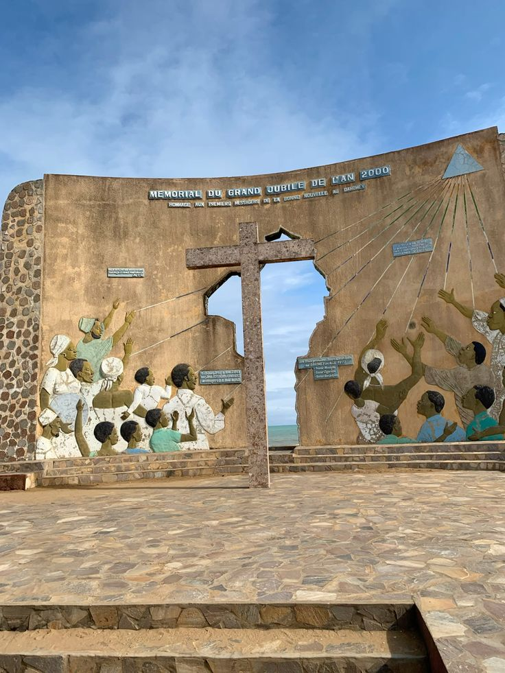

26–27Déc. 2026
Cotonou
WeLovEya
Un rendez-vous musical et culturel célébrant les talents africains dans une ambiance festive.
Un calendrier sélectif pour choisir la bonne période et donner à votre voyage une dimension encore plus forte.
Ces événements peuvent faire évoluer les disponibilités : contactez-nous pour construire votre itinéraire autour d’une date importante.

Un rendez-vous musical et culturel célébrant les talents africains dans une ambiance festive.
Arts, culture et spiritualité Vodun se rencontrent au cœur de la cité historique et sur le littoral.
Deux jours consacrés aux masques, aux traditions, à la musique et aux arts du patrimoine béninois.
Transferts, logement, accompagnement : notre équipe vous aide à vivre ces temps forts avec le bon contexte et le bon rythme.
Préparer mon séjour